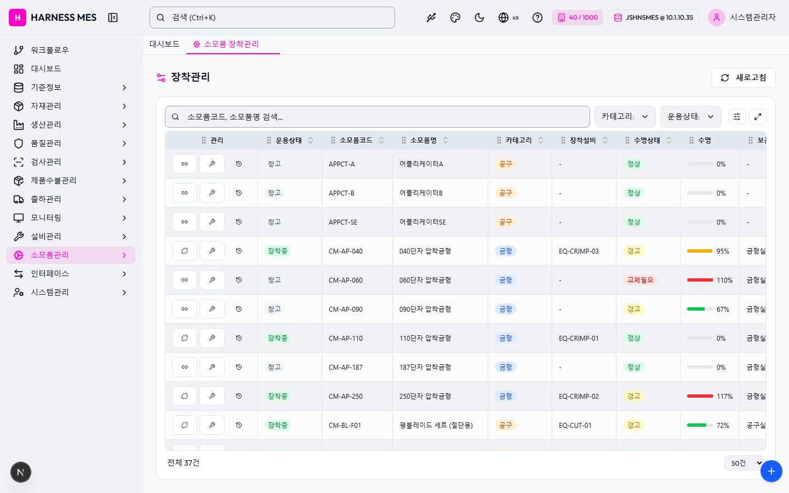

Route: /consumables/mount
Status: PASS / HTTP 200
| 기능/버튼 | 처리 방식 | 상태 | 비고 |
|---|---|---|---|
| 화면 로드 | GET /consumables/mount | 실행 | HTTP 200 |
| 라우트 prewarm | 직접 HTTP 확인 | 실행 | HTTP 200, 211ms |
| 초기 API 호출 | 브라우저 네트워크 수집 | 실행 | 11건 |
| 🇰🇷 | 화면 버튼 목록화 | 목록화 | 후속 메뉴별 세부 시나리오 실행 대상 |
| 시스템관리자 | 화면 버튼 목록화 | 목록화 | 후속 메뉴별 세부 시나리오 실행 대상 |
| 워크플로우 | 화면 버튼 목록화 | 목록화 | 후속 메뉴별 세부 시나리오 실행 대상 |
| 대시보드 | 화면 버튼 목록화 | 목록화 | 후속 메뉴별 세부 시나리오 실행 대상 |
| 기준정보 | 화면 버튼 목록화 | 목록화 | 후속 메뉴별 세부 시나리오 실행 대상 |
| 자재관리 | 화면 버튼 목록화 | 목록화 | 후속 메뉴별 세부 시나리오 실행 대상 |
| 생산관리 | 화면 버튼 목록화 | 목록화 | 후속 메뉴별 세부 시나리오 실행 대상 |
| 품질관리 | 화면 버튼 목록화 | 목록화 | 후속 메뉴별 세부 시나리오 실행 대상 |
| 검사관리 | 화면 버튼 목록화 | 목록화 | 후속 메뉴별 세부 시나리오 실행 대상 |
| 제품수불관리 | 화면 버튼 목록화 | 목록화 | 후속 메뉴별 세부 시나리오 실행 대상 |
| 출하관리 | 화면 버튼 목록화 | 목록화 | 후속 메뉴별 세부 시나리오 실행 대상 |
| 모니터링 | 화면 버튼 목록화 | 목록화 | 후속 메뉴별 세부 시나리오 실행 대상 |
| 설비관리 | 화면 버튼 목록화 | 목록화 | 후속 메뉴별 세부 시나리오 실행 대상 |
| 소모품관리 | 화면 버튼 목록화 | 목록화 | 후속 메뉴별 세부 시나리오 실행 대상 |
| 인터페이스 | 화면 버튼 목록화 | 목록화 | 후속 메뉴별 세부 시나리오 실행 대상 |
| 시스템관리 | 화면 버튼 목록화 | 목록화 | 후속 메뉴별 세부 시나리오 실행 대상 |
| 소모품 장착관리 | 화면 버튼 목록화 | 목록화 | 후속 메뉴별 세부 시나리오 실행 대상 |
| 새로고침 | 화면 버튼 목록화 | 목록화 | 후속 메뉴별 세부 시나리오 실행 대상 |
| 입력 필드 | DOM 수집 | 목록화 | 2개 |
| 선택 필드 | DOM 수집 | 목록화 | 3개 |
| 목록/그리드 | DOM 수집 | 목록화 | table 1, grid 0 |
| Method | URL | Status | OK |
|---|---|---|---|
| GET | /api/health | 200 | OK |
| GET | /api/db-info | 200 | OK |
| GET | /api/health | 200 | OK |
| GET | /api/db-info | 200 | OK |
| GET | /api/db-info | 200 | OK |
| GET | /api/system/comm-configs?commType=SERIAL&useYn=Y | 200 | OK |
| GET | /api/auth/me | 200 | OK |
| GET | /api/system/configs/active | 200 | OK |
| GET | /api/menu-categories/tree | 200 | OK |
| GET | /api/equipment/consumables?limit=5000 | 200 | OK |
| GET | /api/master/com-codes/all-active | 200 | OK |
requestfailed: GET https://fonts.gstatic.com/s/outfit/v15/QGYvz_MVcBeNP4NJtEtq.woff2 net::ERR_ABORTED

H HARNESS MES 🇰🇷 40 / 1000 JSHNSMES @ 10.1.10.35 시스템관리자 워크플로우 대시보드 기준정보 자재관리 생산관리 품질관리 검사관리 제품수불관리 출하관리 모니터링 설비관리 소모품관리 인터페이스 시스템관리 대시보드 소모품 장착관리 장착관리 새로고침 카테고리: 전체 카테고리: 금형 카테고리: 지그 카테고리: 공구 운용상태: 전체 운용상태: 창고대기 운용상태: 장착중 운용상태: 수리중 관리 운용상태 소모품코드 소모품명 카테고리 장착설비 수명상태 수명 보관위치 창고 APPCT-A 어플리케이터A 공구 - 정상 0% - 창고 APPCT-B 어플리케이터B 공구 - 정상 0% - 창고 APPCT-SE 어플리케이터SE 공구 - 정상 0% - 장착중 CM-AP-040 040단자 압착금형 금형 EQ-CRIMP-03 경고 95% 금형실-A3 창고 CM-AP-060 060단자 압착금형 금형 - 교체필요 110% 금형실-A6 창고 CM-AP-090 090단자 압착금형 금형 - 경고 67% 금형실-A5 장착중 CM-AP-110 110단자 압착금형 금형 EQ-CRIMP-01 정상 0% 금형실-A1 창고 CM-AP-187 187단자 압착금형 금형 - 정상 0% 금형실-A4 장착중 CM-AP-250 250단자 압착금형 금형 EQ-CRIMP-02 경고 117% 금형실-A2 장착중 CM-BL-F01 평블레이드 세트 (절단용) 공구 EQ-CUT-01 경고 72% 공구실-B2 장착중 CM-BL-MC1 다선절단 블레이드 세트 공구 EQ-CUT-02 정상 0% 공구실-B5 창고 CM-BL-S01 탈피 블레이드 세트 (V타입) 공구 - 교체필요 105% 공구실-B3 장착중 CM-BL-S02 탈피 블레이드 세트 (로터리) 공구 EQ-STRIP-01 정상 0% 공구실-B4 장착중 CM-BL-V01 V블레이드 세트 (절단용) 공구 EQ-CUT-01 정상 0% 공구실-B1 창고 CM-FL-A01 에어 필터 엘리먼트 공구 - 정상 0% 공구실-F1 창고 CM-FL-D01 집진 필터 백 공구 - 정상 0% 공구실-F2 창고 CM-IJ-I01 잉크젯 잉크 카트리지 공구 - 정상 0% 공구실-D4 창고 CM-IJ-N01 잉크젯 노즐 세트 공구 - 정상 0% 공구실-D3 장착중 CM-JG-CT1 통전검사 치구 A타입 지그 EQ-TEST-01 정상 67% 지그실-E1 장착중 CM-JG-CT2 통전검사 치구 B타입 지그 EQ-TEST-02